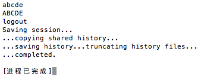

C语言第三章T5 发表于 2018-01-07 更新于 2019-10-31 题目：输入字符，并以按Enter键结束。将其中的小写字母转换成大写字母，而其他字符不变。主要代码：123456789101112# include <stdio.h># include <string.h>int main ( ){ char a; while ( ( a=getchar() ) != '\n') { putchar(a-32); } printf("\n"); return 0;} 运行结果：